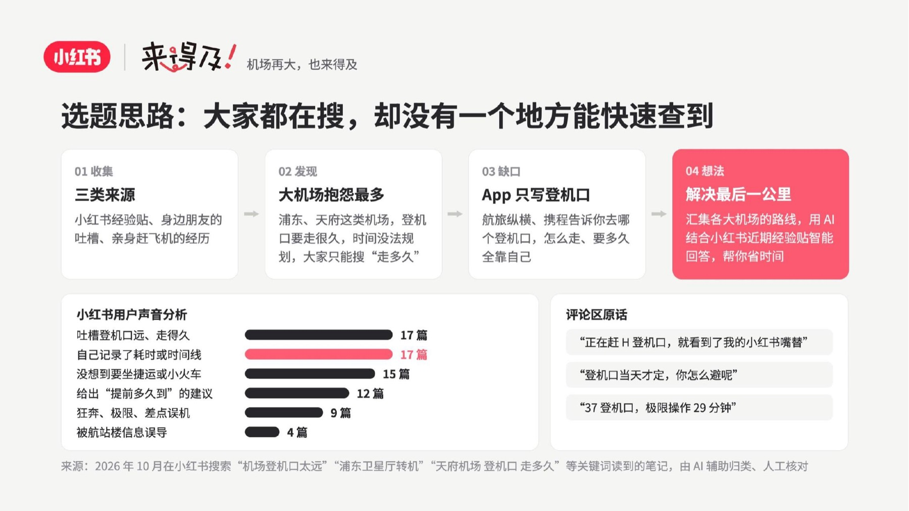
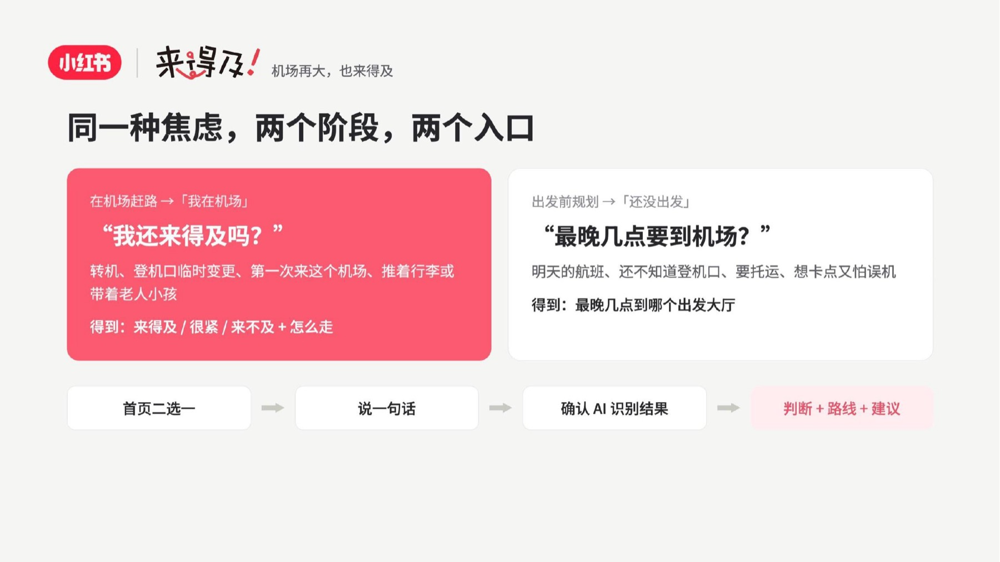
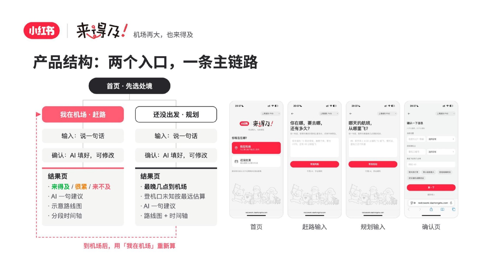
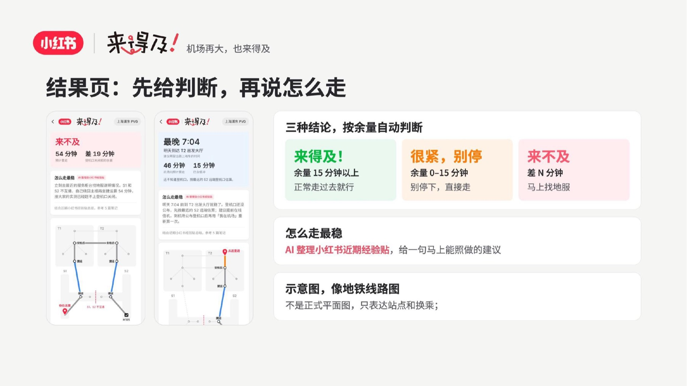
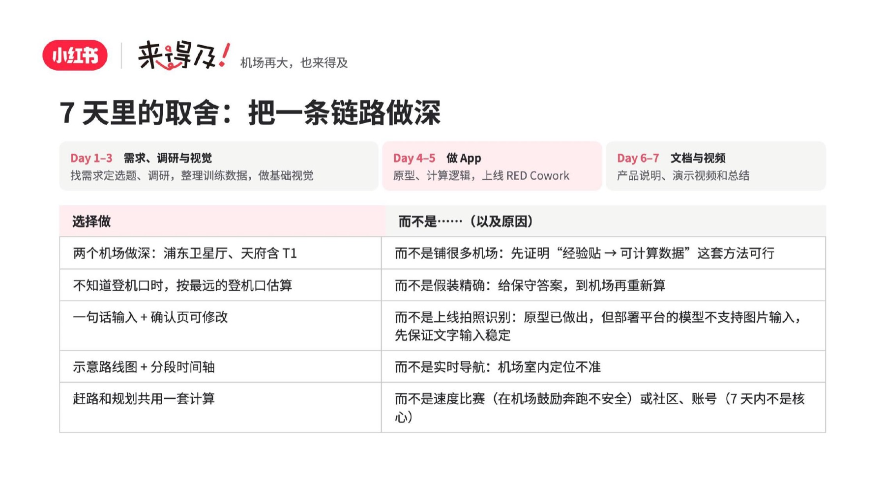
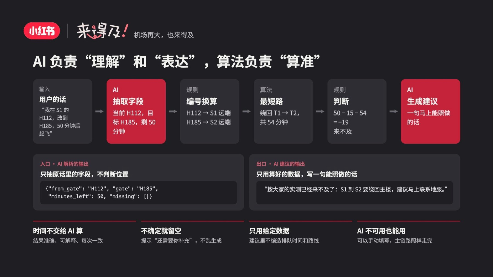
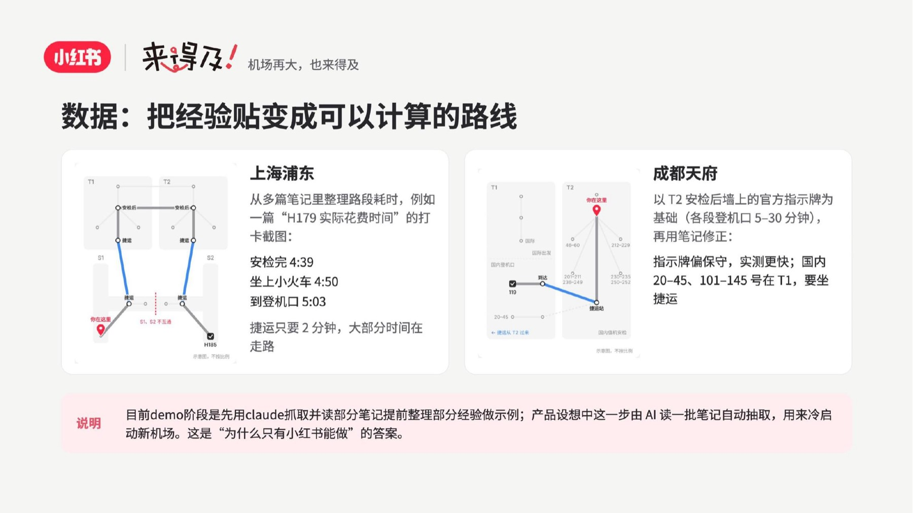
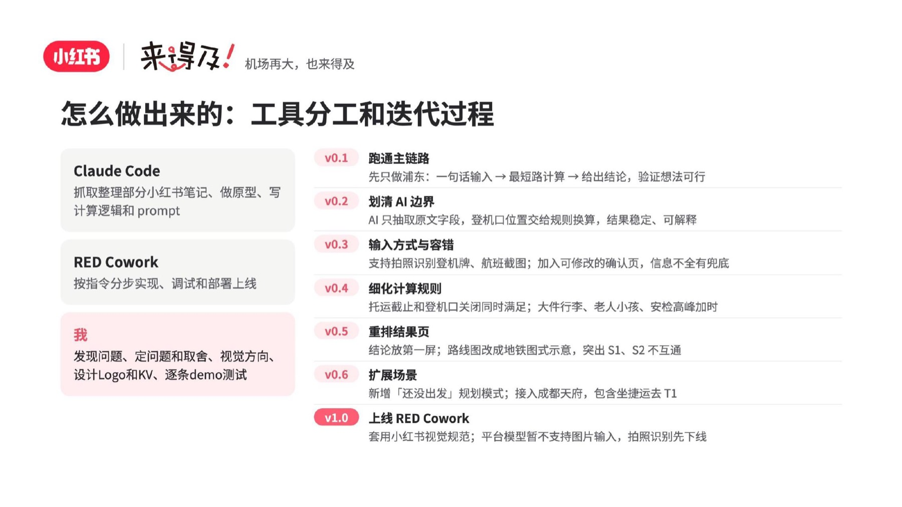
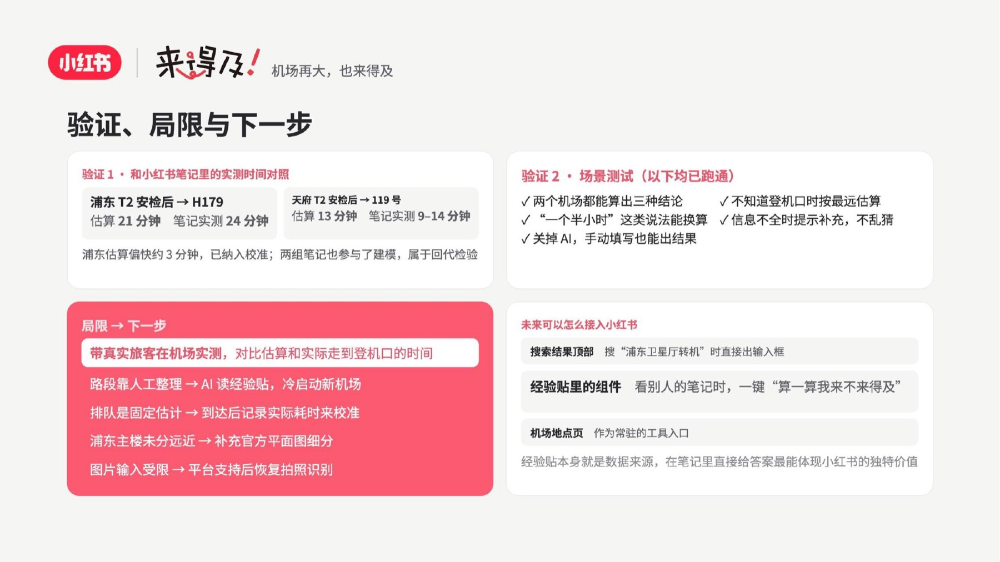

来得及！
"However big the airport, you'll still make it in time." In Time! is an AI-native mini-app that turns the scattered "will-I-make-my-gate" experience posts on Xiaohongshu (RED) into one instant answer. You pick your situation — already at the airport, or still planning — say one sentence, and it replies with a verdict (In time / Cutting it close / Won't make it), a subway-map-style route and one actionable tip.
The split of labour is deliberate: the AI only extracts fields from what the user typed and writes the final sentence; a deterministic rule-and-shortest-path layer does the actual timing, so results stay accurate, explainable and consistent. I worked solo across the whole 0 → 1: framing the problem and the trade-offs, the visual direction, the logo and key visual, the prompt and calculation logic, and testing every path — shipped to RED Cowork, now live for Shanghai Pudong and Chengdu Tianfu.
产品演示 · 先选处境，说一句话，得到判断 + 路线








